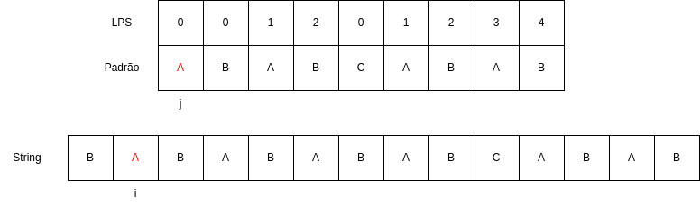
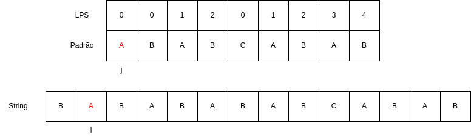

Em um mundo ditado por grandes volumes de dados, a capacidade de encontrar informações em grandes textos de forma rápida e acurada
se torna uma habilidade algorítmica cada vez mais necessária, seja para resolver problemas da computação ou para lidar com desafios
relacionados à biotecnologia e à segurança da informação.
Esse tipo de abordagem pode abranger desde problemas muito comuns — como contar o número de vezes que determinado termo aparece em
um texto — até desafios mais complexos, como encontrar características únicas dentro de uma sequência de DNA.
À primeira vista, esse problema pode parecer trivial, especialmente quando pensamos em contextos simples e cotidianos. No entanto,
recentemente, a busca por padrões foi aplicada em um feito antes inimaginável: a recriação dos lobos terríveis, realizada pela empresa
Colossal Biosciences, por meio de uma tecnologia de bioengenharia avançada chamada CRISPR.
O método utilizado consistiu em edição genômica — ou seja, a identificação de fragmentos específicos na cadeia de DNA de uma espécie e
a alteração de determinadas bases por outras possíveis, como substituir um “A” por um “T” ou um “C” por um “G”.No caso dos lobos terríveis,
o DNA de lobos comuns foi modificado com base em informações obtidas de um fóssil preservado. Com apenas 14 alterações em 20 genes, os
cientistas conseguiram reconstruir uma sequência genética idêntica à da espécie extinta.
Solucionando o problema: Os Algoritimos de Knuth-Morris-Pratt e o algoritimo ingênuo
Para encontrar essas sequências específicas no DNA, é necessário utilizar algoritmos de busca por padrões. O mais simples deles é o algoritmo
ingênuo, que compara o padrão desejado com cada parte do texto (ou DNA), letra por letra, até encontrar uma correspondência. Já o algoritmo
Knuth-Morris-Pratt (KMP) melhora esse processo ao evitar comparações repetidas, usando informações do próprio padrão para avançar mais
rapidamente no texto. Enquanto o método ingênuo pode ser lento em casos grandes, o KMP é muito mais eficiente, especialmente quando lidamos
com sequências longas e repetitivas — como ocorre em genomas.
Dessa forma, precisamos entender o princípio por trás desses algoritimos para solucionarmos o problema,e, por isso, começaremos com a força
bruta do algoritimo ingênuo.
Aprofundando no Algoritimo ingênuo
Antes de estudarmos o algoritmo KMP, vamos entender como funciona o principio de análise
de padrões de strings utilizando o algoritmo ingênuo e como o algoritmo KMP resolve o principal problema dele.
Assim como o KMP, o algoritimo ingênuo também é utilizado para procurar padroẽs em strings.
Neste caso, o algoritimo ingênuo realiza esta busca utilizando uma método de “brute force”,
ou seja, ele testa todas as combinações possiveis para encontrar padrões.
Exercício
Com o contexto de como o algoritimo funciona, pense quais argumentos o algoritmo ingênuo deve
receber para seu funcionemento: algoritimo_ingenuo(???){...}.
Gabarito
Como você deve ter imaginado, ele não precisa receber muitas coisas, apenas as 2 strings e seus tamanhos:
algoritimo_ingênuo(char string[], char substring[], int n, int m){...}
Agora vamos desenvolver mais este código e tentar montar a estrutura do loop principal do algoritimo:
void algoritimo_ingenuo(char string[], char substring[], int n, int m){
for(int i = 0; i < n - m; i++){
// loop para percorrer a string
}
}
Exercício
Completando um pouco mais o código, chegamos dentro do loop de comparação das strings:
void algoritimo_ingenuo(char string[], char substring[], int n, int m){
for(int i = 0; i < n - m; i++){
for (int j = 0; j < m; j++) {
//loop de comparação
}
}
}
Usando o código fornecido, tente desenvolver o conteúdo deste loop para que ele continue realizando as
comparações de caractéres das strings enquanto elas estiverem iguais.
Gabarito
void algoritimo_ingenuo(char string[], char substring[], int n, int m){
for (int i = 0; i <= n - m; i++) {
for (int j = 0; j < m; j++) {
if (string[i + j] != substring[j]){
break;
}
}
}
}
Com a comparação de caractéres feita dentro do loop, apenas precisamos complemetar o codigo para
que ele nos devolva os indices onde o padrão foi encontrado:
void algoritimo_ingenuo(char string[], char substring[], int n, int m){
for (int i = 0; i <= n - m; i++) {
for (int j = 0; j < m; j++) {
if (string[i + j] != substring[j]){
break;
}
if (j == m - 1) {
printf("Padrão encontrado na posição %d\n", i);
}
}
}
}
Vamos ver uma simples demonstração de como ele funciona por meio da animação:
Exercício
Agora que estamos familiarizados com o funcionamento deste algoritimo, tente estimar qual vai ser a complexidade dele no seu pior caso.
Gabarito
Como o algoritmo ingênuo compara cada posição da string principal, e em cada posição tenta casar a substring. Se a string principal tem tamanho n e a substring tem tamanho m, a complexidade no pior caso é (O(nm) ).
Agora vamos tentar com uma string e substring maiores:
Como pode ser visto nas animações, existe um problema bem aparente neste algoritimo, a sua redundância nas comparações. Quando uma incompatibilidade (mismatch) ocorre, o algoritmo simplesmente avança para a próxima posição na string principal e reinicia a comparação da substring do início, revisitando caracteres que já foram analisados.
Por exemplo, se uma parte da substring já foi confirmada como compatível, o algoritmo ingênuo não aproveita essa informação, resultando em comparações desnecessárias. Essa abordagem leva a uma complexidade de (O(nm)) no pior caso, tornando-o inviável para strings longas.
O KMP
Bom, já ficou bem claro que o problema do Ingênuo é que ele demora porque sempre precisa ficar voltando quando da mismatch dentro da mesma string. É exatamente nesse ponto em que o KMP entra: como podemos fazer o algoritmo não ficar voltando quando não precisa? (dica: a resposta é bem simples)
Exercicio
Como podemos fazer o algoritmo não perder progresso?
Gabarito
Pulando caracteres que ele sabe que estão corretos.
Para ficar um pouco mais fácil de visualizar esse defeito:
Agora ficou bem claro qual é a primeira etapa do KMP: pular “casas” quando ele sabe que não vai ocorrer match.
Como superar as limitações do algoritmo ingênuo? A ideia central do KMP é pré-processar o padrão para criar uma estrutura que permita “pular” comparações redundantes, otimizando a busca pelo padrão ao longo da string .
Agora vamos olhar para uma versão de alto nível do código do KMP:
void kmp(char string[],int n, char substring[], int m){
enquanto i for menor que n, continue o processamento {
se string[i] for igual a substring[j]{
avance contador i e j
}
se j for igual a m{
sabemos que o padrao foi encontrado porque o tamanho maximo da substring foi atingido
zere j para continuar a busca
}
se i for menor que n e string[i] for diferente de substring[j]{
se j for igual a 0{
avanca i mantendo j em 0
}caso contrario,{
reinicia j, mas mantem o valor de i para nao perder o progresso
}
}
}
}
Exercício
A partir dessa descricao de alto nivel do KMP, tente escrever como seu codigo em C ficaria
void kmp(char string[], int n, char substring[], int m){
...
}
Gabarito
void kmp(char* string, int n, char* substring, int m) {
// passo 1: inicialize os indices
int i = 0; // indice para o string
int j = 0; // indice para a substring
// passo 2: inicie um laco na string
while (i < n) {
// passo 3: compare caracteres
if (string[i] == substring[j]) {
// passo 4: se coincidem
i++;
j++;
}
// passo 5: se o padrao foi encontrado
if (j == m) {
printf("padrao encontrado na posicao %d\n", i - j);
j = 0; // reinicia j para buscar outras ocorrencias
}
// passo 6: se ha um mismatch
else if (i < n && string[i] != substring[j]) {
// passo 6a: se j eh zero
if (j == 0) {
i++; // avanca i, mantendo j em 0
}
// passo 6b: Se j eh maior que zero
else {
j = 0; // reinicia j, mas mantem i
}
}
}
}
Essa abordagem é mais eficiente que a busca ingênua, pois evita retroceder no texto, mas ainda realiza
comparações redundantes, já que reinicia j para 0 em cada mismatch. Sua complexidade no pior caso pode
se aproximar de O(n * m), onde n é o tamanho do texto e m é o tamanho do padrão.
Retirando a Redundância: O Vetor de LPS
1. Por que precisamos do LPS?
Ao buscar um padrão dentro de um texto, algoritmos ingênuos comparam tudo de novo sempre que ocorre um erro. Isso gera muitas repetições desnecessárias.
O vetor LPS (Longest Proper Prefix which is also Suffix) evita isso: ele indica até onde podemos “reaproveitar” o que já foi casado no padrão, sem voltar no texto.
Com ele, o algoritmo KMP sabe exatamente onde retomar a busca, tornando tudo mais eficiente.
2. Como o LPS é construído?
Para cada posição i no padrão, o algoritmo KMP calcula lps[i], que representa o comprimento do maior prefixo próprio da substring padrao[0…i] que também é um sufixo próprio dessa mesma substring.
Esse valor indica o quanto do padrão já foi reconhecido e pode ser reaproveitado, caso haja falha durante a busca no texto.
Abaixo, mostramos passo a passo a construção do vetor LPS para o padrão ABABAC.
Importante!
Lembre-se que o prefixo sempre começa da primeira letra e exclui a última, enquanto o sufixo termina na última letra e exclui a primeira.
Exemplo:
Na palavra INSPER os prefixos seriam: I, IN, INS, INSP e INSPE.
Enquanto os sufixos seriam: R, ER, PER, SPER, NSPER.
Exercício
Vamos montar o vetor LPS de um texto na prática agora. Tente acertar qual será o maior sufixo que também é prefixo da substring, isto é, padrão[0…i], depois complete o vetor com o tamanho deste elemento.
Não temos prefixos ou sufixos em palavras de uma letra, por isso começamos sempre com 0 na primeira posição do vetor.
i = 1
Prefixo: “A”
Sufixo: “B”
Não temos igualdade, então colocamos 0 novamente no vetor.
i = 2
Prefixos: “A”, “AB”
Sufixos: “A”, “BA”
“A” se repete e tem tamanho 1, então colocamos 1 na próxima casa do vetor.
i = 3
Prefixos: “A”, “AB”, “ABA”
Sufixos: “B”, “AB”, “BAB”
LPS[i] = 2
i = 4
Prefixos: “A”, “AB”, “ABA”, “ABAB”
Sufixos: “A”, “BA”, “ABA”, “BABA”
LPS[i] = 3
i = 5
Prefixos: “A”, “AB”, “ABA”, “ABAB”, “ABABA”
Sufixos: “C”, “AC”, “BAC”, “ABAC”, “BABAC”
LPS[i] = 0
3. Construindo o algoritmo do vetor LPS
Agora que entedemos como o algoritmo funciona na prática, vamos montar o código em C. Tente pensar em qual é o próximo passo para construir o algoritmo, não em código, mas efetivamente o que o algoritmo irá fazer. Volte para o exercicío anterior sempre que precisar. Depois que fizer isso, pense na tradução em código.
Passo 0
void lps(char padrao[], int m, int* lps){
// Restante do código
}
O algoritmo recebe o padrão, o tamanho do padrao e o vetor LPS, o qual vamos modificar na função.
Passo 1
void lps(char padrao[], int m, int* lps){
// iniciamos definindo lps[0] como 0
}
Tradução para código
void lps(char padrao[], int m, int* lps){
lps[0] = 0;
}
Passo 2
void lps(char padrao[], int m, int* lps){
// definimos um contador i que vai percorrer o padrao.
// também ja podemos definir uma variável para guardarmos o comprimento do prefixo/sufixo igual atual.
}
Tradução para código
void lps(char padrao[], int m, int* lps){
lps[0] = 0;
i = 1 // i começa em 1 porque já sabemos o que tem na posição 0.
comprimento = 0
}
Passo 3
void lps(char padrao[], int m, int* lps){
// Percorre o padrão até o final
}
Tradução para código
void lps(char padrao[], int m, int* lps){
lps[0] = 0;
i = 1
comprimento = 0
while (i < m) {
}
}
Passo 4
void lps(char padrao[], int m, int* lps){
// Se o caractere atual bate com o caractere em 'comprimento'
// Significa que estendemos um prefixo que também é sufixo
}
Tradução para código
void lps(char padrao[], int m, int* lps){
lps[0] = 0;
i = 1
comprimento = 0
while (i < m) {
if (padrao[i] == padrao[comprimento]) {
comprimento++;
lps[i] = comprimento;
i++;
}
}
}
Passo 5
void lps(char padrao[], int m, int* lps){
// Se o caractere atual nao bate com o caractere do comprimento, tentamos com um comprimento menor, até que o comprimento seja 0.
}
Tradução para código
void lps(char padrao[], int m, int* lps){
lps[0] = 0;
i = 1
comprimento = 0
while (i < m) {
if (padrao[i] == padrao[comprimento]) {
comprimento++;
lps[i] = comprimento;
i++;
}
else {
if (comprimento != 0) {
comprimento = lps[comprimento - 1]; // Podemos usar recursão para tornar o algoritmo mais eficiente.
} else {
lps[i] = 0;
i++;
}
}
}
}
RESUMO
void lps(char padrao[], int m, int* lps) {
// O primeiro caractere nunca tem prefixo próprio → lps[0] = 0
lps[0] = 0;
// comprimento guarda o tamanho do maior prefixo próprio que também é sufixo
int comprimento = 0;
// Começamos a análise a partir do segundo caractere
int i = 1;
while (i < m) {
// Caso os caracteres batam: padrao[i] estende o prefixo já conhecido
if (padrao[i] == padrao[comprimento]) {
comprimento++; // aumentamos o comprimento do prefixo/sufixo atual
lps[i] = comprimento; // salvamos esse valor no vetor LPS
i++; // avançamos no padrão
}
else {
// Se já tínhamos um prefixo parcial, tentamos recuar para um menor
if (comprimento != 0) {
comprimento = lps[comprimento - 1];
// Note que não avançamos i — vamos tentar casar novamente
}
else {
// Se não há mais prefixo a testar, o valor de lps[i] é 0
lps[i] = 0;
i++;
}
}
}
}
Otimizando o KMP
Utilizando o LPS como uma função auxiliar para o KMP, podemos otimizar ele muito, de maneira a reduzir a redundância ao extremo. Vamos olhar como fica o código do KMP agora:
void kmp(char string[], char substring[], int n, int m) {
int lps[m];
lps(substring, m, lps);
int i = 0;
int j = 0;
while (i < n) {
if (string[i] == substring[j]) {
i++;
j++;
}
if (j == m) {
printf("Padrão encontrado na posição %d\n", i - j);
j = lps[j - 1];
} else if (i < n && string[i] != substring[j]) {
if (j != 0) {
j = lps[j - 1];
} else {
i++;
}
}
}
}
Exercício
A partir do código fornecido, tente estimar a nova complexidade do algoritmo KMP.
Gabarito
Agora que estamos usando o lps, o KMP alcança uma complexidade de (O(n + m)). Isso ocorre porque a construção do vetor LPS, que pré-processa o padrão, é realizada em (O(m)), e a busca na string principal é feita em (O(n)), sem retrocessos desnecessários.
Vamos olhar agora para uma animação, demonstrando o funcionamento desta versão do KMP:


 
